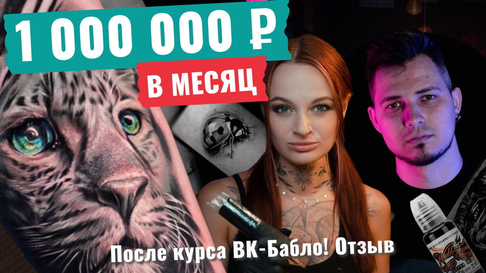
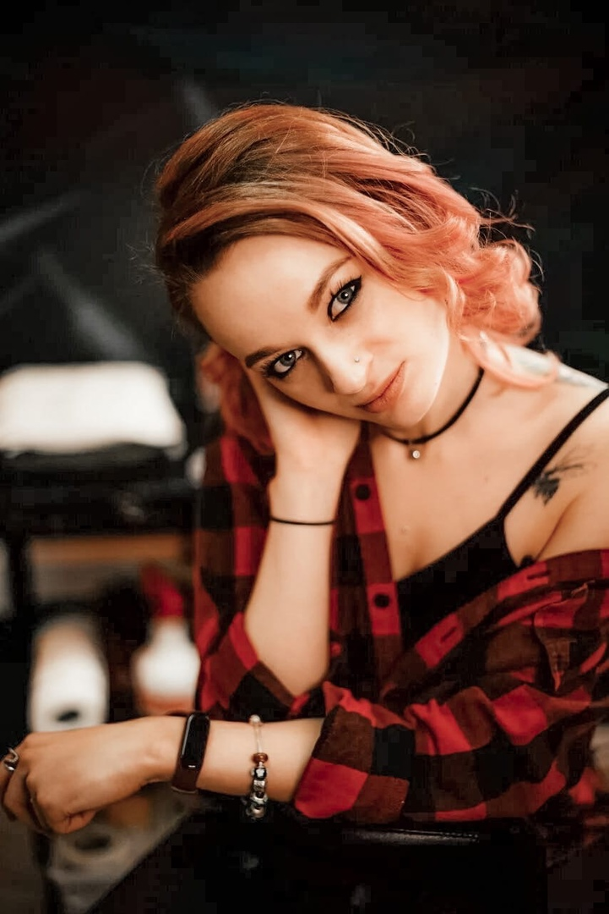
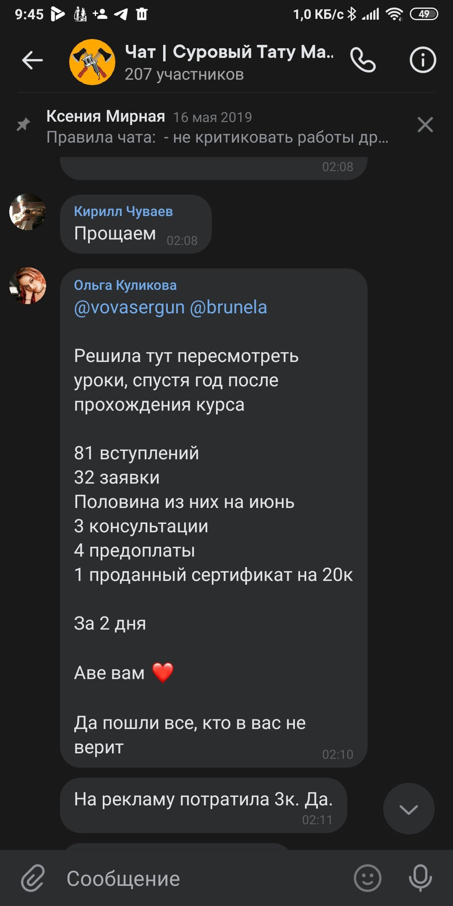
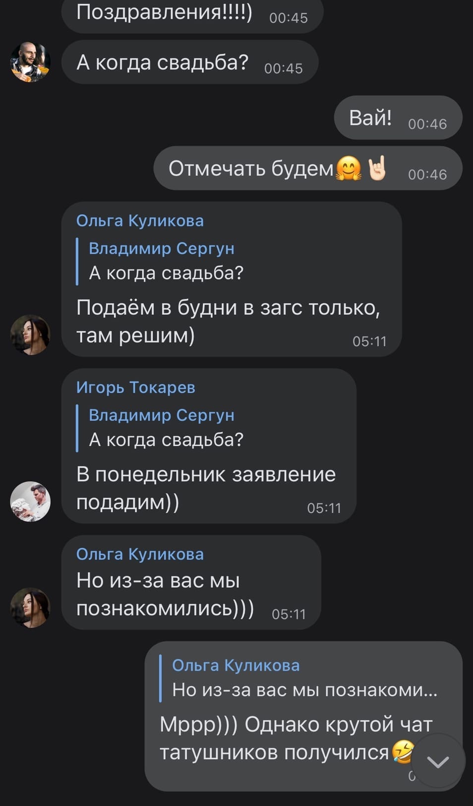
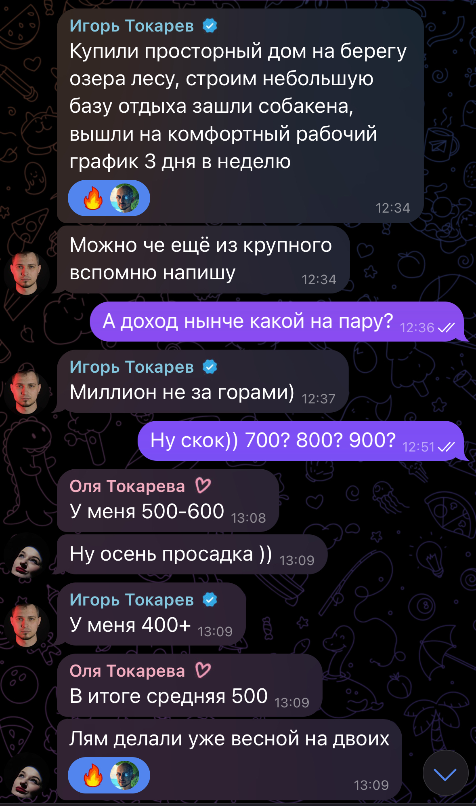

Это Игорь и Оля Токаревы. Одни из моих первых учеников. Наша гордость!
Ребята после обучения познакомились в нашем чате. Поженились. Открыли тату студию в центре Москвы. Купили себе дом, машину, мотоцикл.
Их результаты действительно впечатляют. Поэтому мы решили взять у них интервью, чтобы они могли поделиться своим взглядом на ремесло и опытом.
Вопросы:
- Сколько лет в деле?
- Сколько зарабатывали на старте и где брали клиентов?
- Что нужно чтобы открыть свою студию?
- Как сейчас клиентов привлекаете?
- Нужно ли разбираться в маркетинге самому или можно все делегировать?
- Сколько вкладываете в образование?
- Что посоветуете новичкам ремесленникам?
Приятного просмотра:
Ольга Токарева (Куликова). Тату-мастер из Москвы.
Оля бомбический мастер в стиле реализм.
Она пришла на курс с сомнениями и страхом, что если она перестанет брать все подряд заказы и начнет двигать только реализм, то у неё не будет клиентов.

На тот момент Оля работала в студии, и все заказы шли от них. Но она мечтала уйти «на вольные хлеба» и делать только те проекты, которые хочется.
И да, её мечты сбылись. Теперь Оля востребованный мастер в стиле реализм. Открыла свою студию вместе с Игорем, и работает только с теми клиентами и идеями, которые нравятся ей.
У нас есть видео-отзыв с её первыми впечатлениями после прохождения курса.
А вот что написала Оля спустя ГОД, когда заново настраивала рекламу:

А еще, встретила свою любовь в нашем чате для тату-мастеров. Теперь у них с мужем, Игорем Токаревым, который тоже у нас учился, совместный бизнес. И они уже вышли на доход 1 000 000 руб./мес. на татуировках.

Вот так бывает, что курс объединяет людей. И делает их богаче =)
